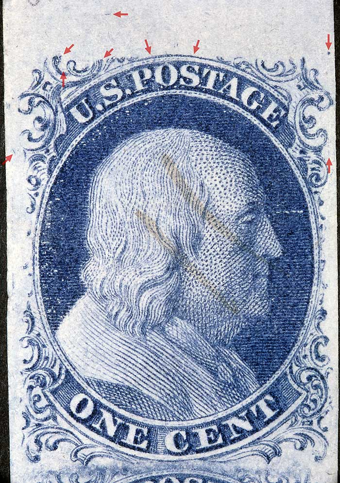
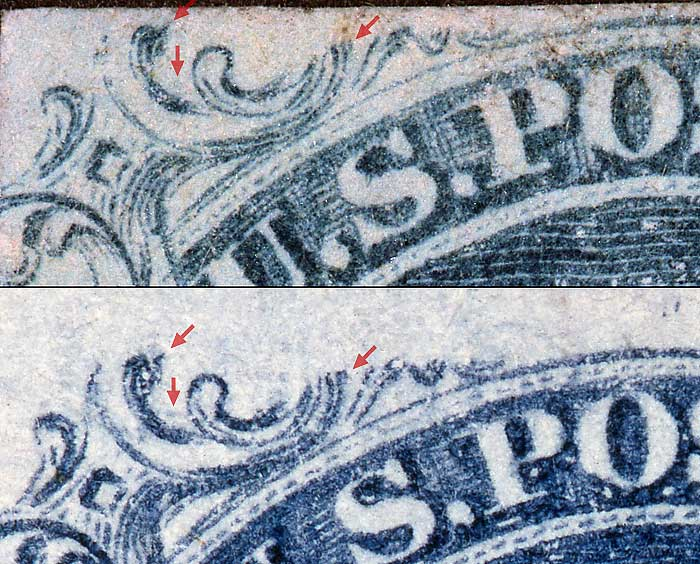
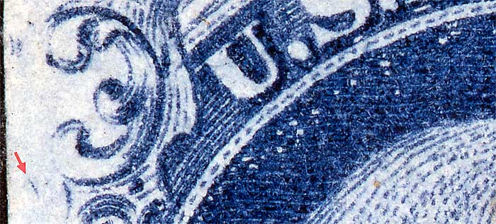
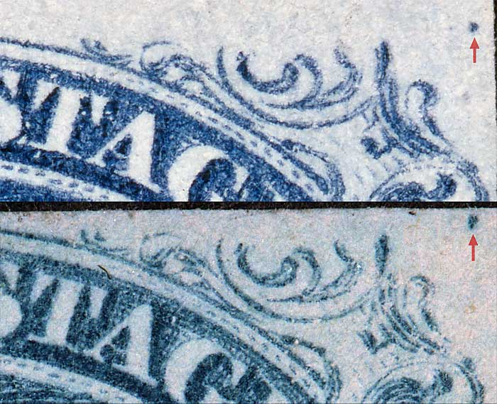
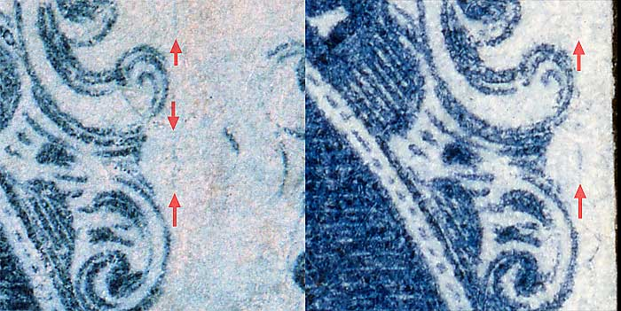

1¢ Franklin Issue of 1851-1857, PLATE 2 Position 7R2, (Scott #7 shown) |
| Scott #7 Blue, Type II, Relief T Issued both imperforate and perforated. Perforated copies are more scarce. Additional Plating Notes: (B.) The thick top curved line should be noted as part of a minor shift (as well as the Ornament S extension). The right-hand line in Ornament U (marked in the Neinken mat) is part of the design, but perhaps a bit thicker. (C.) The faint vertical line to the left of Ornament D is consistent, as well as the stronger one further down, just below the middle left. Vertical strip of 3 consisting of 7R2, 17R2 and 27R2. |
|  |
| Figure 1. (Below) Various plating marks in the upper left ornaments as illustrated in the Neinken/Ashbook plating diagram.
 |
| Figure 2. (Below) The diagonal dash of color illustrated here is found on many top row positions from Plates 1, 2 and 3 in various degrees of intensity.
 |
| Figure 3. (Below) Detail view of GUIDE DOT location at the upper right corner as illustrated in the plating diagrams.
 |
| Figure 4. (Below) A faint vertical line of color between Ornament M and N, not illustrated in the plating diagrams but confirmed as consistent here. The diagonal dash of color between Ornament M of 7R2 and Ornament B of 8R2 (left most image) is found on many top row positions from Plates 1, 2 and 3 in various degrees of intensity. This mark technically belongs to 8R2. See Figure 2. above for a similar mark belonging to 7R2.
 |
DISCLAIMER and COPYRIGHT INFORMATION: Thanks for visiting this site. I hope you learn something new as we are making new discoveries all the time. You, the visitor, have my permission to link to my pages and to share the INFORMATION with others. The images themselves fall under the fair use guidelines established by the United States Congress and Copyright law. Basically contact us before using. I also ask in return that you send me an e-mail if I have made a mistake, or have made some other technical blunder that in my rush to put these pages up would cause the visitor confusion. Please also visit my other website at www.slingshotvenus.com. and support the live music arts. While your there, be sure to purchase our music. There are not many philatelic rock stars around and we need all the help we can get. :-) I can be reached at: nerdman@ix.netcom.com Update 9.6.2010 |